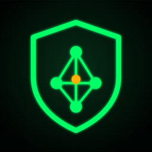

Chat, SOS and maps with no internet
ApocalypSO is an offline communication and survival app for iPhone, iPad, Mac and Windows: nearby phones form a mesh network (Bluetooth and direct wifi, and LoRa radio if you want) to send messages and SOS alerts, and the app includes 202 survival articles, maps and tools that work with no internet or cell service. No accounts or sign-up; the essentials are free.
Updated
Where to get it
ApocalypSO is in preparation and is not yet published in any store. It is coming to the App Store (iPhone and iPad), the Mac App Store, the Microsoft Store (Windows) and itch.io (Windows and Mac). Links will appear here as soon as it is out.
- iPhone and iPad (iOS 16.4 or later): the full app, with the extended library.
- Mac and Windows: the mesh with other computers over the local network, and on the Mac also over Bluetooth with nearby iPhones and iPads; free and with no ads.
- Android: no version for now.
Free. ApocalypSO Pro (one-time payment) removes the ads and opens the whole extended library.
What ApocalypSO is
When the network goes down, ApocalypSO keeps working. Nearby phones running the app link up by themselves over Bluetooth and direct wifi and form a mesh: each message hops from phone to phone until it reaches its destination, without going through any server. It is made for power outages, disasters, the backcountry and trips with no signal. There are no accounts: your identity is a key created on your phone.
An SOS that reaches everyone
- Press and hold the SOS button for 2 seconds and confirm: your alert, with your position if GPS has one, is forwarded across the whole mesh.
- Whoever receives it has a guide to find you: an arrow using GPS and compass, the distance with its margin of error and, once very close, "look around you". With no position, a hot-or-cold guide based on signal strength.
- If you saved emergency contacts on iPhone or iPad, a ready-written SMS for them with your position also opens; you only tap "Send". And next to SOS there is a button to call the emergency number of your region (112 by default).
Messages with no internet
- A general channel with everyone nearby, direct messages and private groups. Direct and group messages are end-to-end encrypted; the general channel and SOS alerts are signed but not encrypted, and anyone on the mesh can read them.
- Add your family by scanning their QR code and compare the safety fingerprint in person.
- With a Meshtastic LoRa radio connected, your messages travel farther and you read the texts from that network.
- Stealth mode to stay invisible on the mesh, and a battery-saving mode that switches by itself depending on whether there is internet.
Survival library built in
202 articles in 7 languages, already inside the app: first aid and medicine, water, food, survival and shelter, disasters, energy, mechanics, communications, navigation, security and community. Written from public first aid and civil protection guidelines, with the source cited, and with instant search offline. The medical information is for guidance only and does not replace a professional or the emergency services. On iPhone and iPad it can be extended with downloadable packs (encyclopedias, medicine, survival and expert Q&A).
Offline maps
- World map included, and detailed country maps to download while you have internet.
- Mark shelters, water, rally points or hazards: the pin reaches everyone else's map, and you can share your position with the mesh whenever you choose.
- Coordinates in degrees, UTM and MGRS.
Field tools
Morse code with the flashlight and sound, looping SOS and a Morse-to-text translator; compass, GPS, altimeter with storm warning (on models with a barometer), sun and moon position, and a calendar with its own clock that syncs over the mesh. And from Share you can pass the guides to another nearby phone over wifi with no internet: all it takes is a browser and a QR code.
Free and Pro
Free: the built-in library, the world map, the mesh and the tools. The free version for iPhone and iPad shows Google ads only when there is internet: a banner, sometimes a full-screen ad when you open the app or while a download is being prepared, and a video to download each country map; never on top of an SOS in progress. ApocalypSO Pro costs a one-time EUR 3.99 (no subscription), gives the whole extended library and removes every ad. The groups of the extended library can also be bought separately at EUR 0.99 each, but those do not remove the ads. Prices shown for Spain; in other countries, the price in your App Store. Mac and Windows are free and ad-free, and do not sell purchases for now.
Languages
Spanish, Latin American Spanish, English, Brazilian Portuguese, German, French and Italian.
Your data
No account, no phone number and no email. Messages do not go through any server of ours; your position only leaves when you send an SOS or share it yourself; emergency contacts stay on your phone. Statistics (Firebase) and personalised ads only with your consent. Details in the privacy policy. Terms of use: Apple's standard EULA.
Frequently asked questions
Which app lets you chat with no internet or cell service?
ApocalypSO. Nearby phones running the app form a mesh over Bluetooth and direct wifi and each message hops from phone to phone, with no server or account. There is a general channel, direct messages and private groups that are end-to-end encrypted. What it does not do: it has no fixed range, because that depends on how many phones are in between (with a Meshtastic LoRa radio it goes farther), and the general channel is not private: anyone on the mesh can read it.
How do I send an SOS with no coverage?
Press and hold the SOS button for 2 seconds and confirm. The alert, with your position if GPS has one, is forwarded over the mesh to nearby phones, and whoever receives it has a guide with an arrow, distance and compass to find you. On iPhone and iPad, if you saved emergency contacts, a ready-written SMS also opens (you send it) and there is a button to call 112 or the number of your region. What it does not do: it does not alert the emergency services by itself or guarantee that anyone is within reach; if you can, call.
Is there a survival and first aid library that works offline?
Yes: 202 articles in 7 languages already inside the app, with instant offline search, written from public first aid and civil protection guidelines with the source cited. What it does not do: it does not replace a doctor or the emergency services, and the extended packs are downloaded while you have internet.
Is ApocalypSO free? What does Pro remove?
It is free: the built-in library, the world map, the mesh and the tools. The free version for iPhone and iPad has ads only with internet (a banner, an occasional full-screen ad and a video for each country map you download). ApocalypSO Pro costs a one-time EUR 3.99 in Spain, no subscription: it opens the whole extended library and removes every ad. Single groups cost EUR 0.99 and do not remove the ads. What it does not do: Mac and Windows do not sell purchases for now.
Does it need an account and what data does it collect?
There are no accounts: your identity is a key created on your phone. Messages and contacts do not go through any server of ours, and your position only leaves when you send an SOS or share it. Usage statistics (Firebase) and personalised ads only with your consent. What it does not do: it does not sell data and cannot delete messages that already reached other phones; uninstalling the app deletes yours.
Does it work on Android, Mac and Windows?
There is a version for iPhone and iPad, for Mac and for Windows. On Android, not for now. On Mac and Windows the mesh forms with other computers over the local network and, on the Mac, over Bluetooth with iPhones and iPads; they are free and ad-free. What it does not do: Bluetooth links do not carry files, so maps and packs cannot be passed between a Mac and an iPhone.
Can I use a Meshtastic LoRa radio?
Yes, optionally: connect the radio over Bluetooth (iPhone and iPad) or USB (computer) and your messages and SOS alerts also go out over LoRa; texts from the Meshtastic network show up in the app. What it does not do: it is not a full chat with any Meshtastic device, and without a radio the mesh works the same over Bluetooth and wifi.